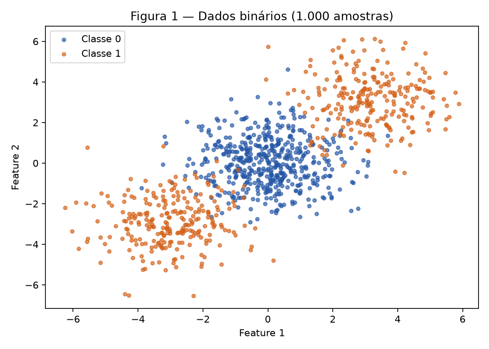
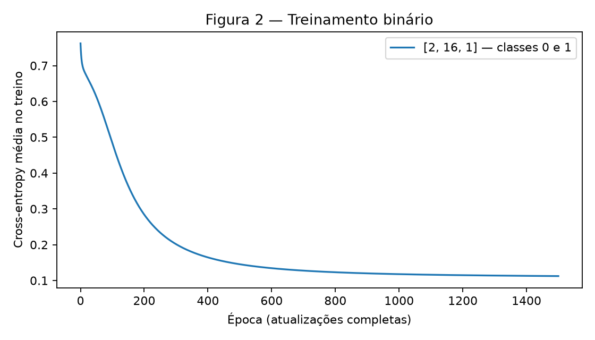
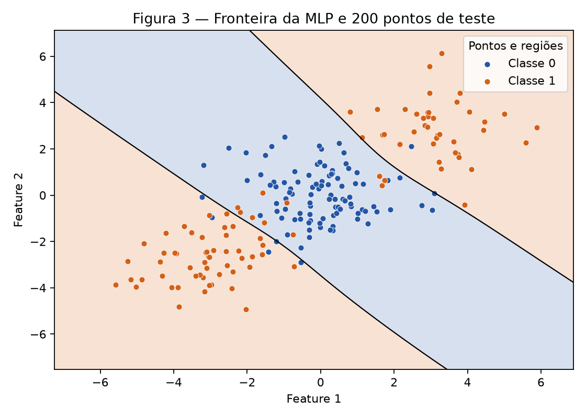
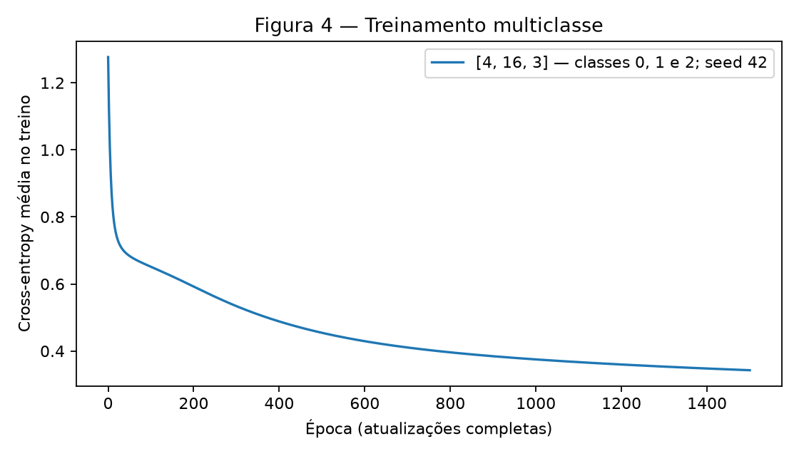
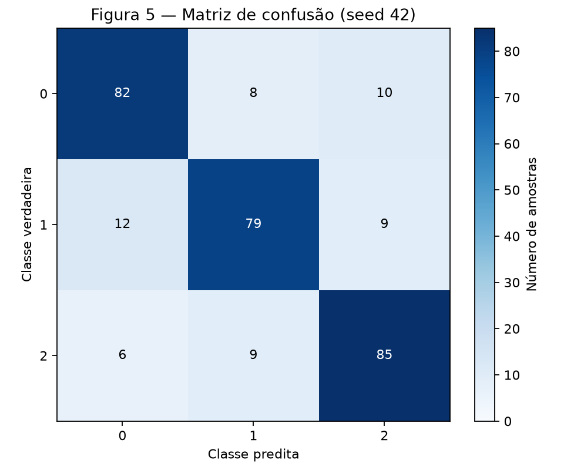
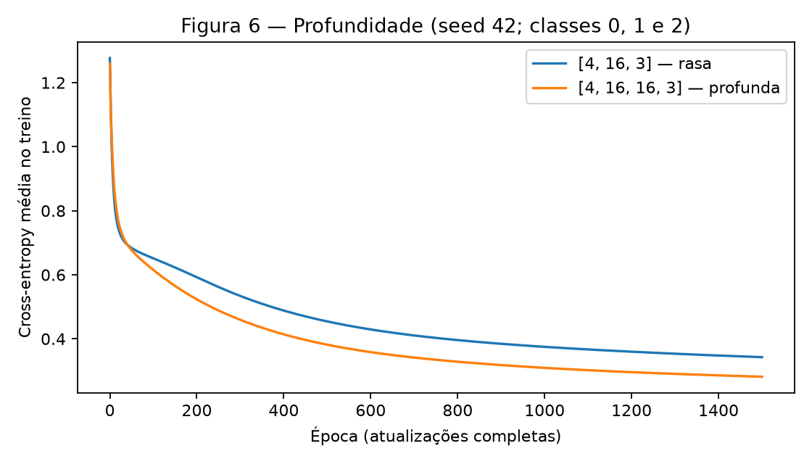

Atividade 3 — Multi-Layer Perceptron
Aluno: Daniel Marco Djanikian. Disciplina: Artificial Neural Networks and Deep Learning, Insper, 2026.2.
Referências: enunciado e rubrica oficiais e formato de submissão. As contas do Exercise 1 são desenvolvidas abaixo; NumPy serve para conferência. Nos demais exercícios, uma única MLP implementa manualmente as ativações, losses, forward, backward e atualização dos parâmetros.
Para reproduzir, na raiz de um clone do repositório, com Python 3.12:
python3.12 -m venv env
source env/bin/activate
python -m pip install -r requirements.txt
python docs/exercises/mlp/code/mlp.py > /tmp/mlp-resultados.json
python docs/exercises/mlp/code/mlp.py > /tmp/mlp-repeticao.json
diff -u /tmp/mlp-resultados.json /tmp/mlp-repeticao.json
mkdocs build --strict
O script gera figures/fig1.png a figures/fig6.png e imprime todas as métricas
e as contas de conferência em JSON; não reescreve o relatório. Não é necessário
baixar dados. As dependências já estão fixadas no requirements.txt do
repositório: NumPy 2.5.2, Matplotlib 3.11.1 e scikit-learn 1.9.0.
Protocolo fixo: dados originais, sem normalização; tanh nas camadas ocultas; Xavier uniforme; biases zero; gradient descent full-batch com learning rate \(0{,}1\) e 1.500 atualizações, sem regularização ou early stopping. Nenhum hiperparâmetro foi escolhido por acurácia no teste. A loss da época 0 é medida antes de treinar; a da época 1.500, após a última atualização.
O experimento binário usa rng = np.random.default_rng(42). A exceção são
as repetições pareadas dos Exercises 3 e 4: cada arquitetura começa com um
gerador novo np.random.default_rng(seed), para seeds 42, 43 e 44. O
resultado raso com seed 42 é o resultado principal do Exercise 3, reutilizado
no Exercise 4. Os dados e o split continuam com random_state=42 em todas as
repetições; só a inicialização dos pesos varia. A auditoria usa um gerador
separado com seed 2026 e não consome os geradores dos experimentos.
Exercise 1
A — Forward pass
Neste exercício, vetores são colunas e os pesos seguem a orientação do enunciado: \(z^{(1)}=W^{(1)}x+b^{(1)}\). São dados:
As duas pré-ativações ocultas são:
Aplicando \(\tanh(z)=(e^z-e^{-z})/(e^z+e^{-z})\):
A pré-ativação e a ativação da saída são:
Para uma amostra, a MSE do enunciado não tem o fator \(1/2\):
Os números são apresentados com seis casas decimais. Os cálculos seguintes usam a precisão completa, sem acumular o arredondamento exibido.
B — Backward pass
Começamos pela loss e aplicamos a regra da cadeia em cada ligação.
1. Da loss à pré-ativação da saída.
2. Pesos e bias da saída. Como \(u^{(2)}=\sum_j W^{(2)}_j h^{(1)}_j+b^{(2)}\), temos \(\partial u^{(2)}/\partial W^{(2)}_j=h^{(1)}_j\) e \(\partial u^{(2)}/\partial b^{(2)}=1\). Logo:
3. Da saída às ativações e pré-ativações ocultas. Como \(\partial u^{(2)}/\partial h^{(1)}_j=W^{(2)}_j\):
As derivadas locais de tanh são:
Cada ativação depende apenas de sua própria pré-ativação; as derivadas cruzadas são zero. Multiplicando os fatores de cada caminho:
4. Pesos e biases ocultos. Como \(z^{(1)}_i=\sum_j W^{(1)}_{ij}x_j+b^{(1)}_i\), \(\partial z^{(1)}_i/\partial W^{(1)}_{ij}=x_j\) e \(\partial z^{(1)}_i/\partial b^{(1)}_i=1\). Assim:
Portanto, na orientação do enunciado:
C — Parameter update
Aplicamos simultaneamente \(\theta_{novo}=\theta-0.3\,\partial L/\partial\theta\), usando todos os gradientes calculados com os parâmetros antigos. O texto menciona oito parâmetros, mas são nove escalares: quatro pesos ocultos, dois biases ocultos, dois pesos de saída e um bias de saída.
| Parâmetro | Substituição na atualização | Novo valor |
|---|---|---|
| \(W^{(1)}_{11}\) | \(0.300000-0.3(-0.254685)\) | 0.376405 |
| \(W^{(1)}_{12}\) | \(-0.100000-0.3(0.101874)\) | -0.130562 |
| \(W^{(1)}_{21}\) | \(0.200000-0.3(0.159016)\) | 0.152295 |
| \(W^{(1)}_{22}\) | \(0.400000-0.3(-0.063606)\) | 0.419082 |
| \(b^{(1)}_1\) | \(0.100000-0.3(-0.509370)\) | 0.252811 |
| \(b^{(1)}_2\) | \(-0.200000-0.3(0.318032)\) | -0.295410 |
| \(W^{(2)}_1\) | \(0.500000-0.3(-0.288624)\) | 0.586587 |
| \(W^{(2)}_2\) | \(-0.300000-0.3(0.194968)\) | -0.358490 |
| \(b^{(2)}\) | \(0.200000-0.3(-1.094828)\) | 0.528448 |
Conferindo com um segundo forward pass:
A loss diminui de 0.400377 para 0.083417: o passo na direção oposta ao gradiente aproxima a previsão do alvo 1. Uma taxa arbitrariamente grande não garantiria essa diminuição; aqui ela foi confirmada numericamente.
Exercise 2
A — Generate the data
Foi executado make_blobs(n_samples=[500, 250, 250],
centers=np.array([[0., 0.], [3., 3.], [-3., -3.]]),
cluster_std=1.2, random_state=42), seguido de y = (clusters > 0).astype(int).
São 1.000 pontos, com 500 na classe 0 e 500 na classe 1. O split
train_test_split(..., test_size=0.2, random_state=42, stratify=y) fornece
800 pontos de treino (400 por classe) e 200 de teste (100 por classe).

Figura 1 — O cluster da classe 0 fica entre os dois clusters da classe 1. Os eixos são as duas features originais e a legenda identifica as classes.
B — Establish the baseline
LogisticRegression(max_iter=1000), com os demais argumentos padrão,
foi ajustada somente no treino. A acurácia de teste foi 47,50% (95/200).
O solver padrão é determinístico neste problema. Esta é a única utilização
de um classificador pronto, junto ao baseline explicitamente pedido no
Exercise 3. A acurácia da MLP é calculada diretamente com NumPy.
C — Implement the MLP
A arquitetura [2, 16, 1] tem uma camada oculta tanh e uma saída sigmoid, com 65 parâmetros: \(2(16)+16+16(1)+1\). Foram usadas 1.500 épocas, learning rate 0,1, batch com os 800 exemplos de treino e seed 42. A loss caiu de 0.762159 para 0.112369 e a acurácia de teste foi 92,00% (184/200).
No código, cada amostra ocupa uma linha: \(A^{(0)}=X\), \(W^{(l)}\in\mathbb R^{d_{l-1}\times d_l}\), \(b^{(l)}\in\mathbb R^{d_l}\). Essa orientação é a transposta da usada na conta individual do Exercise 1. O forward é:
A inicialização é \(W^{(l)}_{ij}\sim U[-\sqrt{6/(d_{l-1}+d_l)},\sqrt{6/(d_{l-1}+d_l)}]\). Ela evita pesos iniciais excessivos para tanh; biases começam em zero.
Para \(N\) amostras, a binary cross-entropy e suas derivadas são:
A implementação avalia a mesma loss pelos logits, \(L=\operatorname{mean}(\operatorname{logaddexp}(0,z)-yz)\), e calcula a sigmoid como \(e^{-\operatorname{logaddexp}(0,-z)}\). Assim não é necessário tomar \(\log(0)\), nem recortar probabilidades.
Nas camadas anteriores, aplicamos a regra da cadeia:
A divisão por \(N\) ocorre apenas na saída, para não ser aplicada várias vezes. Todos os gradientes são calculados antes de atualizar os parâmetros: \(W^{(l)}\leftarrow W^{(l)}-\eta\nabla_{W^{(l)}}L\) e \(b^{(l)}\leftarrow b^{(l)}-\eta\nabla_{b^{(l)}}L\). A previsão é classe 1 se \(p\geq0.5\), classe 0 caso contrário.
O arquivo abaixo é o código completo efetivamente executado. forward,
backward, update e train são reutilizados sem modificação nos
Exercises 3 e 4; o argumento task controla a saída e a loss.
"""MLP NumPy: execute este arquivo para conferir as contas e gerar as 6 figuras.
Não lê dados externos. Requer apenas as dependências do requirements.txt.
Pesos no código: (entradas, saídas); no Exercise 1, a notação é transposta.
"""
import json
from pathlib import Path
import matplotlib
matplotlib.use("Agg") # Também funciona sem interface gráfica.
import matplotlib.pyplot as plt
import numpy as np
from matplotlib.colors import ListedColormap
from sklearn.datasets import make_blobs, make_classification
from sklearn.linear_model import LogisticRegression # Somente os baselines.
from sklearn.metrics import confusion_matrix
from sklearn.model_selection import train_test_split
def initialize(sizes, rng):
"""Xavier uniforme: W[l] tem shape (sizes[l], sizes[l+1]); biases zero."""
parameters = []
for n_in, n_out in zip(sizes[:-1], sizes[1:]):
limit = np.sqrt(6 / (n_in + n_out))
weights = rng.uniform(-limit, limit, size=(n_in, n_out))
parameters.append((weights, np.zeros(n_out)))
return parameters
def output_activation(logits, task):
if task == "binary":
# sigmoid(z) = exp(-log(1+exp(-z))), sem overflow em exp.
return np.exp(-np.logaddexp(0, -logits))
if task == "multiclass":
shifted = logits - logits.max(axis=1, keepdims=True)
exponentials = np.exp(shifted)
return exponentials / exponentials.sum(axis=1, keepdims=True)
raise ValueError("task deve ser 'binary' ou 'multiclass'")
def targets(y, output_size, task):
"""Coluna binária ou matriz one-hot; não usa codificadores do sklearn."""
return y[:, None] if task == "binary" else np.eye(output_size)[y]
def forward(X, parameters, task):
"""Guarda ativações para aplicar a regra da cadeia depois."""
activations = [X]
for layer, (weights, bias) in enumerate(parameters):
logits = activations[-1] @ weights + bias
last = layer == len(parameters) - 1
activations.append(output_activation(logits, task) if last
else np.tanh(logits))
return activations, logits
def loss(logits, y, task):
"""Cross-entropy média a partir dos logits, sem log(0) ou clipping."""
if task == "binary":
return float(np.mean(np.logaddexp(0, logits) - y[:, None] * logits))
shifted = logits - logits.max(axis=1, keepdims=True)
log_normalizer = np.log(np.exp(shifted).sum(axis=1))
return float(np.mean(log_normalizer - shifted[np.arange(len(y)), y]))
def backward(parameters, activations, y, task):
"""Mesmo backward em todas as arquiteturas: delta de saída = (p-Y)/N."""
expected = targets(y, activations[-1].shape[1], task)
delta = (activations[-1] - expected) / len(y)
gradients = [None] * len(parameters)
for layer in reversed(range(len(parameters))):
weights, bias = parameters[layer]
d_weights = activations[layer].T @ delta
d_bias = delta.sum(axis=0)
assert d_weights.shape == weights.shape and d_bias.shape == bias.shape
gradients[layer] = (d_weights, d_bias)
if layer > 0:
delta = (delta @ weights.T) * (1 - activations[layer] ** 2)
return gradients
def update(parameters, gradients, learning_rate):
# Todos os gradientes já foram calculados com os pesos anteriores.
for (weights, bias), (d_weights, d_bias) in zip(parameters, gradients):
weights -= learning_rate * d_weights
bias -= learning_rate * d_bias
def train(X, y, sizes, task, rng, learning_rate=0.1, epochs=1500):
parameters = initialize(sizes, rng)
history = []
# Época 0 = antes de treinar; época 1500 = após 1500 atualizações.
for epoch in range(epochs + 1):
activations, logits = forward(X, parameters, task)
history.append(loss(logits, y, task))
if epoch < epochs:
gradients = backward(parameters, activations, y, task)
update(parameters, gradients, learning_rate)
assert np.isfinite(history).all()
assert all(np.isfinite(array).all() for pair in parameters for array in pair)
return parameters, np.array(history)
def predict(X, parameters, task):
probabilities = forward(X, parameters, task)[0][-1]
assert np.isfinite(probabilities).all()
assert ((probabilities >= 0) & (probabilities <= 1)).all()
if task == "binary":
return (probabilities[:, 0] >= 0.5).astype(int)
assert np.allclose(probabilities.sum(axis=1), 1)
return probabilities.argmax(axis=1)
def parameter_count(parameters):
return sum(array.size for pair in parameters for array in pair)
def check_gradients():
"""Diferenças centrais em TODOS os pesos/biases das três arquiteturas.
Dados pequenos e gerador próprio: esta auditoria não consome o rng principal.
Não participa do treinamento; apenas confere o backward analítico.
"""
audit_rng = np.random.default_rng(2026)
errors = {}
for sizes, task in [([2, 16, 1], "binary"),
([4, 16, 3], "multiclass"),
([4, 16, 16, 3], "multiclass")]:
X = audit_rng.normal(size=(5, sizes[0]))
y = np.arange(5) % (2 if task == "binary" else sizes[-1])
parameters = initialize(sizes, audit_rng)
activations, _ = forward(X, parameters, task)
assert [a.shape for a in activations] == [(5, n) for n in sizes]
gradients = backward(parameters, activations, y, task)
max_error = 0.0
for pair, gradient_pair in zip(parameters, gradients):
for array, analytical in zip(pair, gradient_pair):
for index in np.ndindex(array.shape):
original = array[index]
array[index] = original + 1e-5
plus = loss(forward(X, parameters, task)[1], y, task)
array[index] = original - 1e-5
minus = loss(forward(X, parameters, task)[1], y, task)
array[index] = original
numerical = (plus - minus) / 2e-5
max_error = max(max_error, abs(numerical - analytical[index]))
assert max_error < 1e-7, (sizes, max_error)
errors[str(sizes)] = max_error
# Probabilidades e losses corretas mesmo em logits extremos, sem overflow.
with np.errstate(over="raise", invalid="raise", divide="raise"):
for task, logits, y in [
("binary", np.array([[-1000.], [1000.]]), np.array([1, 0])),
("multiclass", np.array([[1000., 0., -1000.]]), np.array([2])),
]:
probabilities = output_activation(logits, task)
assert np.isfinite(probabilities).all()
assert np.isfinite(loss(logits, y, task))
assert np.isclose(loss(logits, y, task), 1000 if task == "binary" else 2000)
return errors
def check_manual():
"""Conferência NumPy do Exercise 1; a derivação está escrita no relatório."""
x, y = np.array([0.5, -0.2]), 1.0
W1 = np.array([[0.3, -0.1], [0.2, 0.4]])
b1, W2, b2 = np.array([0.1, -0.2]), np.array([0.5, -0.3]), 0.2
z = W1 @ x + b1
h = np.tanh(z)
u = W2 @ h + b2
prediction = np.tanh(u)
before = (y - prediction) ** 2
d_prediction = 2 * (prediction - y)
d_u = d_prediction * (1 - prediction ** 2)
d_W2, d_b2 = d_u * h, d_u
d_h = d_u * W2
d_z = d_h * (1 - h ** 2)
d_W1, d_b1 = np.outer(d_z, x), d_z
W1_new, b1_new = W1 - 0.3 * d_W1, b1 - 0.3 * d_b1
W2_new, b2_new = W2 - 0.3 * d_W2, b2 - 0.3 * d_b2
z_new = W1_new @ x + b1_new
h_new = np.tanh(z_new)
u_new = W2_new @ h_new + b2_new
prediction_new = np.tanh(u_new)
after = (y - prediction_new) ** 2
assert after < before
return dict(z=z, h=h, u=u, prediction=prediction, loss=before,
d_prediction=d_prediction, d_tanh_output=1 - prediction ** 2,
d_u=d_u, d_W2=d_W2, d_b2=d_b2, d_h=d_h,
d_tanh_hidden=1 - h ** 2, d_z=d_z, d_W1=d_W1, d_b1=d_b1,
W1_new=W1_new, b1_new=b1_new, W2_new=W2_new, b2_new=b2_new,
z_new=z_new, h_new=h_new, u_new=u_new,
prediction_new=prediction_new, loss_new=after)
def save_figure(fig, directory, number):
fig.tight_layout()
fig.savefig(directory / f"fig{number}.png", dpi=160)
plt.close(fig)
def loss_figure(directory, number, history, title, label):
fig, ax = plt.subplots(figsize=(7, 4))
ax.plot(np.arange(len(history)), history, label=label)
ax.set(title=title, xlabel="Época (atualizações completas)",
ylabel="Cross-entropy média no treino")
ax.legend()
save_figure(fig, directory, number)
def main():
directory = Path(__file__).resolve().parents[1] / "figures"
directory.mkdir(parents=True, exist_ok=True)
gradient_errors = check_gradients()
manual = check_manual()
rng = np.random.default_rng(42)
learning_rate, epochs = 0.1, 1500
colors = ["#2456a6", "#d46016"]
# Exercise 2: argumentos e split exatamente como no enunciado.
X, clusters = make_blobs(
n_samples=[500, 250, 250],
centers=np.array([[0., 0.], [3., 3.], [-3., -3.]]),
cluster_std=1.2, random_state=42)
y = (clusters > 0).astype(int)
X_train, X_test, y_train, y_test = train_test_split(
X, y, test_size=0.2, random_state=42, stratify=y)
fig, ax = plt.subplots(figsize=(7, 5))
for label, color in enumerate(colors):
ax.scatter(*X[y == label].T, s=13, alpha=0.65, color=color,
label=f"Classe {label}")
ax.set(title="Figura 1 — Dados binários (1.000 amostras)",
xlabel="Feature 1", ylabel="Feature 2")
ax.legend()
save_figure(fig, directory, 1)
baseline_binary = LogisticRegression(max_iter=1000).fit(X_train, y_train)
binary_parameters, binary_loss = train(
X_train, y_train, [2, 16, 1], "binary", rng, learning_rate, epochs)
binary_accuracy = np.mean(predict(X_test, binary_parameters, "binary") == y_test)
loss_figure(directory, 2, binary_loss, "Figura 2 — Treinamento binário",
"[2, 16, 1] — classes 0 e 1")
# A grade serve somente à visualização, sem ajustar parâmetros com o teste.
grid_x, grid_y = np.meshgrid(
np.linspace(X[:, 0].min() - 1, X[:, 0].max() + 1, 300),
np.linspace(X[:, 1].min() - 1, X[:, 1].max() + 1, 300))
grid = np.column_stack([grid_x.ravel(), grid_y.ravel()])
grid_prob = forward(grid, binary_parameters, "binary")[0][-1][:, 0]
fig, ax = plt.subplots(figsize=(7, 5))
ax.contourf(grid_x, grid_y, (grid_prob >= 0.5).reshape(grid_x.shape),
levels=[-0.5, 0.5, 1.5], cmap=ListedColormap(colors), alpha=0.18)
ax.contour(grid_x, grid_y, grid_prob.reshape(grid_x.shape),
levels=[0.5], colors="black", linewidths=1)
for label, color in enumerate(colors):
ax.scatter(*X_test[y_test == label].T, s=25, color=color,
edgecolors="white", linewidths=0.4, label=f"Classe {label}")
ax.set(title="Figura 3 — Fronteira da MLP e 200 pontos de teste",
xlabel="Feature 1", ylabel="Feature 2")
ax.legend(title="Pontos e regiões")
save_figure(fig, directory, 3)
# Exercises 3 e 4: mesmos dados brutos e mesmo split para TODAS as execuções.
X_multi, y_multi = make_classification(
n_samples=1500, n_features=4, n_informative=4,
n_redundant=0, n_repeated=0, n_classes=3,
n_clusters_per_class=2, class_sep=1.0, random_state=42)
Xm_train, Xm_test, ym_train, ym_test = train_test_split(
X_multi, y_multi, test_size=0.2, random_state=42, stratify=y_multi)
baseline_multi = LogisticRegression(max_iter=1000).fit(Xm_train, ym_train)
runs, curves, models = [], {}, {}
for seed in (42, 43, 44):
for sizes in ([4, 16, 3], [4, 16, 16, 3]):
# Exceção explícita à instância principal: cada par de arquiteturas
# começa em um gerador novo com a MESMA seed. A execução rasa 42
# é também o resultado principal do Exercise 3, sem retreinamento.
pair_rng = np.random.default_rng(seed)
parameters, history = train(
Xm_train, ym_train, sizes, "multiclass", pair_rng,
learning_rate, epochs)
predictions = predict(Xm_test, parameters, "multiclass")
runs.append(dict(seed=seed, sizes=sizes,
parameters=parameter_count(parameters),
initial_loss=history[0], final_loss=history[-1],
accuracy=float(np.mean(predictions == ym_test))))
if seed == 42:
curves[len(sizes)] = history
models[len(sizes)] = parameters
loss_figure(directory, 4, curves[3], "Figura 4 — Treinamento multiclasse",
"[4, 16, 3] — classes 0, 1 e 2; seed 42")
predictions = predict(Xm_test, models[3], "multiclass")
matrix = confusion_matrix(ym_test, predictions, labels=[0, 1, 2])
fig, ax = plt.subplots(figsize=(6, 5))
image = ax.imshow(matrix, cmap="Blues", vmin=0)
for i, j in np.ndindex(matrix.shape):
ax.text(j, i, str(matrix[i, j]), ha="center", va="center",
color="white" if matrix[i, j] > matrix.max() / 2 else "black")
ax.set(title="Figura 5 — Matriz de confusão (seed 42)",
xlabel="Classe predita", ylabel="Classe verdadeira",
xticks=[0, 1, 2], yticks=[0, 1, 2])
fig.colorbar(image, ax=ax, label="Número de amostras")
save_figure(fig, directory, 5)
fig, ax = plt.subplots(figsize=(7, 4))
for depth, history in curves.items():
ax.plot(np.arange(len(history)), history,
label="[4, 16, 3] — rasa" if depth == 3 else "[4, 16, 16, 3] — profunda")
ax.set(title="Figura 6 — Profundidade (seed 42; classes 0, 1 e 2)",
xlabel="Época (atualizações completas)",
ylabel="Cross-entropy média no treino")
ax.legend()
save_figure(fig, directory, 6)
means = []
for sizes in ([4, 16, 3], [4, 16, 16, 3]):
selected = [r for r in runs if r["sizes"] == sizes]
means.append(dict(sizes=sizes,
final_loss=float(np.mean([r["final_loss"] for r in selected])),
accuracy=float(np.mean([r["accuracy"] for r in selected]))))
pair_counts = {f"{i}-{j}": int(matrix[i, j] + matrix[j, i])
for i in range(3) for j in range(i + 1, 3)}
output = dict(
gradient_max_absolute_errors=gradient_errors, manual=manual,
learning_rate=learning_rate, epochs=epochs,
binary=dict(train_counts=np.bincount(y_train), test_counts=np.bincount(y_test),
baseline_accuracy=float(np.mean(baseline_binary.predict(X_test) == y_test)),
sizes=[2, 16, 1], parameters=parameter_count(binary_parameters),
initial_loss=binary_loss[0], final_loss=binary_loss[-1],
accuracy=float(binary_accuracy)),
multiclass=dict(train_counts=np.bincount(ym_train), test_counts=np.bincount(ym_test),
baseline_accuracy=float(np.mean(baseline_multi.predict(Xm_test) == ym_test)),
confusion_matrix=matrix, confusion_pair_counts=pair_counts),
runs=runs, means=means,
mean_accuracy_difference_pp=100 * (means[1]["accuracy"] - means[0]["accuracy"]))
print(json.dumps(output, indent=2, ensure_ascii=False,
default=lambda value: value.tolist()))
if __name__ == "__main__":
main()

Figura 2 — Loss média no treino, da inicialização até a atualização 1.500.

Figura 3 — Regiões avaliadas em uma grade 300 × 300. Azul indica classe 0; laranja, classe 1. A linha preta corresponde a \(p=0.5\); os pontos são exclusivamente do teste. A grade é usada para visualizar o modelo treinado.
D — Analysis
A Figura 3 mostra uma faixa diagonal azul envolvendo o cluster central, com duas regiões laranja em lados opostos, nas direções de \((3,3)\) e \((-3,-3)\). As duas bordas da faixa são levemente curvas. Uma única fronteira linear divide o plano em dois semiplanos e não pode atribuir ambos os extremos à classe 1 mantendo o centro na classe 0. A combinação das 16 ativações tanh permite construir essas duas transições.
O baseline obteve 47,50%, enquanto a MLP obteve 92,00%, diferença de 44,50 pontos percentuais. Pela simetria aproximada dos dois clusters externos, a classe 1 não apresenta um deslocamento de média que uma regressão logística consiga explorar bem. Pequenas assimetrias da amostra levam a uma reta com desempenho de teste ligeiramente abaixo de 50%; isso não é uma propriedade universal da regressão logística. Uma previsão constante obteria 50% neste teste balanceado. A sobreposição das nuvens explica parte dos erros que permanecem mesmo com a fronteira não linear.
Exercise 3
A — Generate the data
Foi executado exatamente:
make_classification(n_samples=1500, n_features=4, n_informative=4,
n_redundant=0, n_repeated=0, n_classes=3, n_clusters_per_class=2,
class_sep=1.0, random_state=42).
O split estratificado 80/20 com seed 42 produziu 1.200 amostras de treino
e 300 de teste, com shapes (1200, 4) e (300, 4).
| Classe | Total | Treino | Teste |
|---|---|---|---|
| 0 | 499 | 399 | 100 |
| 1 | 499 | 399 | 100 |
| 2 | 502 | 402 | 100 |
Há quatro features informativas e seis clusters, dois por classe. Os defaults
restantes do gerador foram preservados, inclusive flip_y=0.01: a pequena
variação nas contagens é compatível com os rótulos perturbados pelo gerador.
Não foi feito pré-processamento nem ajuste com os dados de teste.
B — Adapt the network
A arquitetura passa a ser [4, 16, 3]. Mudam as dimensões, o argumento
task="multiclass", a saída softmax e a categorical cross-entropy.
O mesmo laço de camadas implementa o forward, o backward e a atualização.
Para uma amostra, sejam \(u\) os três logits, \(p\) as probabilidades e \(Y\) o alvo one-hot, com \(\sum_kY_k=1\):
Derivando o quociente, com \(S=\sum_r e^{u_r}\):
Além disso, \(\partial\ell/\partial p_k=-Y_k/p_k\). A regra da cadeia soma a contribuição de todas as probabilidades:
Para a loss média \(L=N^{-1}\sum_i\ell_i\):
Essa é a mesma expressão usada com sigmoid + BCE, com alvos agora one-hot. Os gradientes das camadas ocultas seguem as equações do Exercise 2. Na implementação, subtraímos \(m_i=\max_k u_{ik}\) antes de exponenciar. Isso preserva a softmax e permite calcular a loss de forma estável:
C — Train and evaluate
A rede [4, 16, 3] tem 131 parâmetros:
\((4\cdot16+16)+(16\cdot3+3)=80+51\).
Com seed 42, tanh, softmax, categorical cross-entropy, Xavier uniforme,
batch 1.200, learning rate 0,1 e 1.500 épocas, a loss caiu de
1.276697 para 0.342706. A previsão é argmax da saída.
A acurácia de teste foi 82,00% (246/300).

Figura 4 — Rede rasa multiclasse com seed 42; o conjunto de teste não participa da atualização dos parâmetros.

Figura 5 — Linhas: classes verdadeiras; colunas: classes preditas. Os rótulos 0, 1 e 2 identificam as classes nos dois eixos; a escala de cor indica contagens. São 100 exemplos de teste por classe.
Os números da matriz também são apresentados no texto:
| Verdadeira / Predita | 0 | 1 | 2 |
|---|---|---|---|
| 0 | 82 | 8 | 10 |
| 1 | 12 | 79 | 9 |
| 2 | 6 | 9 | 85 |
D — Analysis
O par mais confundido é classes 0 e 1, somando as duas direções: \(C_{01}+C_{10}=8+12=\mathbf{20}\) erros. Os outros pares têm \(C_{02}+C_{20}=10+6=16\) e \(C_{12}+C_{21}=9+9=18\) erros. O maior erro dirigido é 1 → 0, com 12 amostras.
Cada classe ocupa dois clusters em um espaço de quatro dimensões. Portanto, uma classe não precisa ocupar uma região convexa única e pode se aproximar de clusters de outras classes. Essa estrutura permite fronteiras complexas e é compatível com a confusão observada. A matriz não revela as coordenadas ou os clusters de origem dos erros; a atribuição de uma sobreposição específica ao par 0–1 é uma hipótese geométrica, não algo demonstrado pela matriz. As quatro features serem informativas não garante separação perfeita, especialmente com sobreposição e a perturbação de rótulos do gerador.
O baseline LogisticRegression(max_iter=1000) foi ajustado no mesmo treino
e obteve 66,33% (199/300). A camada oculta acrescentou 15,67 pontos
percentuais ao permitir transformar as quatro entradas antes da separação
das três classes. O resultado de 82,00% ficou pouco abaixo da referência
aproximada de 83–86% do enunciado. A loss decresce e os gradientes foram
verificados; esse intervalo foi usado como diagnóstico, sem ajustar o método
para forçar uma acurácia. Nas três inicializações, a média rasa foi 83,11%.
Exercise 4
A — Train the deeper network
A rede profunda é [4, 16, 16, 3], com duas camadas ocultas tanh e 403 parâmetros:
São os mesmos dados e split do Exercise 3, sem gerar nova amostra. Foram mantidos Xavier uniforme, biases zero, loss, full-batch, learning rate 0,1 e 1.500 épocas. Com seed 42, a acurácia foi 86,67% (260/300) e a loss final de treino foi 0.281627. A largura 16 das camadas ocultas foi preservada; a alteração arquitetural foi acrescentar uma camada de 16.
B — Compare
As duas arquiteturas foram treinadas com seeds 42, 43 e 44, reiniciando
um gerador NumPy com a mesma seed em cada par. O primeiro bloco de pesos
tem inclusive os mesmos valores iniciais em cada par, pois seu shape é
(4, 16) nos dois modelos. Os demais blocos têm shapes diferentes.
Cada execução realiza o mesmo número de atualizações com todos os 1.200
exemplos de treino. A rede profunda exige mais operações por atualização,
então este é um controle por épocas, sem equiparar tempo de processamento.

Figura 6 — Os dois modelos usam seed 42 e os mesmos hiperparâmetros. Ambas as curvas incluem a época 0 e a loss após 1.500 atualizações.
Resultados de cada execução, medidos após a última atualização:
| Seed | Arquitetura | Camadas ocultas | Parâmetros | Loss final de treino | Acurácia de teste |
|---|---|---|---|---|---|
| 42 | [4, 16, 3] | 1 | 131 | 0.342706 | 82,00% (246/300) |
| 42 | [4, 16, 16, 3] | 2 | 403 | 0.281627 | 86,67% (260/300) |
| 43 | [4, 16, 3] | 1 | 131 | 0.354570 | 83,33% (250/300) |
| 43 | [4, 16, 16, 3] | 2 | 403 | 0.279323 | 85,33% (256/300) |
| 44 | [4, 16, 3] | 1 | 131 | 0.348660 | 84,00% (252/300) |
| 44 | [4, 16, 16, 3] | 2 | 403 | 0.267090 | 86,33% (259/300) |
A tabela de comparação obrigatória abaixo utiliza médias das três seeds para loss e acurácia:
| Modelo | Camadas ocultas | Parâmetros | Loss final de treino (média) | Acurácia de teste (média) |
|---|---|---|---|---|
| Exercise 3 — [4, 16, 3] | 1 | 131 | 0.348645 | 83,11% |
| Exercise 4 — [4, 16, 16, 3] | 2 | 403 | 0.276014 | 86,11% |
As diferenças pareadas de acurácia (profunda − rasa), em pontos percentuais, são +4,67 (42), +2,00 (43) e +2,33 (44). Usando os valores sem arredondamento:
C — Analysis
A segunda camada ajudou neste experimento: a acurácia média passou de 83,11% para 86,11% e a loss média de treino caiu de 0.348645 para 0.276014. A rede profunda venceu nos três pares. Na seed 42, a Figura 6 mostra loss final menor (0.281627 contra 0.342706), acompanhada de maior acurácia (86,67% contra 82,00%). Portanto, neste conjunto, os resultados de treino e teste apontam na mesma direção. Não houve busca de hiperparâmetros nem ajuste para produzir esse resultado.
A composição de duas transformações tanh permite combinar características intermediárias e pode ajudar a organizar as regiões dos seis clusters. Isso também elevou o número de parâmetros de 131 para 403, acréscimo de 272 e aproximadamente 3,08 vezes o total original. Assim, o ganho observado inclui a capacidade adicional trazida pela profundidade: esta comparação não isola profundidade de quantidade de parâmetros.
Mais camadas introduzem mais produtos de derivadas, podendo dificultar a otimização, atenuar os gradientes e aumentar a sensibilidade à inicialização. Aqui isso não impediu a rede profunda de obter menor loss no orçamento fixo. Seis clusters não exigem necessariamente grande profundidade: uma rede rasa com largura suficiente também pode modelar regiões complexas. Em problemas com estrutura hierárquica, como partes locais que compõem objetos em imagens, compor representações em várias camadas pode ser mais útil.
As três seeds fornecem uma comparação descritiva das inicializações neste único split, sem demonstrar superioridade universal ou significância estatística em outros conjuntos de dados.
Verificação técnica e leitura do código
O script foi executado duas vezes no ambiente informado, com resultados JSON idênticos. A auditoria numérica calcula, para cada peso e cada bias:
Os maiores erros absolutos entre esse valor e o backward analítico foram:
| Arquitetura | Parâmetros verificados | Maior erro absoluto |
|---|---|---|
| [2, 16, 1] | 65 | \(1.25\times10^{-11}\) |
| [4, 16, 3] | 131 | \(3.67\times10^{-11}\) |
| [4, 16, 16, 3] | 403 | \(9.17\times10^{-11}\) |
Todos passaram a tolerância de \(10^{-7}\). As dimensões das ativações e gradientes também são verificadas. Com logits de magnitude 1.000, sigmoid, softmax e as losses permaneceram finitas, inclusive para previsões erradas com alta confiança (BCE 1.000 e categorical cross-entropy 2.000). Nenhum treinamento produziu NaN ou infinito. As probabilidades de teste estão entre 0 e 1 e as saídas softmax somam 1 por amostra.
As seis figuras foram geradas, numeradas e incorporadas. O site passou em
mkdocs build --strict; o snippet incorpora o arquivo executável. Os
experimentos utilizam apenas os geradores e splits indicados; o sklearn
participa também da matriz de confusão e dos dois baselines autorizados.
Nenhum dado ou componente do projeto EDA é utilizado.
Para explicar o backpropagation: forward guarda o que cada camada recebeu
e produziu; backward começa com o erro de saída \((P-Y)/N\), calcula quanto
cada peso contribuiu para esse erro e o propaga para a camada anterior pela
regra da cadeia. A derivada de tanh é obtida da ativação já guardada,
\(1-A^2\). update subtrai de cada parâmetro o gradiente multiplicado por
0,1. A repetição desse processo reduz a loss de treino. Acrescentar uma
camada muda a lista de matrizes percorridas, sem exigir outro algoritmo.
Results summary
| # | Quantity | Value |
|---|---|---|
| 1 | Ex. 1 — \(z^{(1)}\) e \(h^{(1)}\) | \(z^{(1)}=[0.270000,-0.180000]\); \(h^{(1)}=[0.263625,-0.178081]\) |
| 2 | Ex. 1 — \(u^{(2)}\), \(\hat y\) e \(L\) | \(u^{(2)}=0.385237\); \(\hat y=0.367247\); \(L=0.400377\) |
| 3 | Ex. 1 — Todos os nove parâmetros atualizados | \(W^{(1)}=\begin{bmatrix}0.376405&-0.130562\\0.152295&0.419082\end{bmatrix}\); \(b^{(1)}=[0.252811,-0.295410]\); \(W^{(2)}=[0.586587,-0.358490]\); \(b^{(2)}=0.528448\) |
| 4 | Ex. 2 — Acurácia de teste do baseline linear | 47,50% |
| 5 | Ex. 2 — Arquitetura e acurácia de teste | [2, 16, 1]; 92,00% (seed 42) |
| 6 | Ex. 3 — Arquitetura e acurácia de teste | [4, 16, 3]; 82,00% (seed 42); média das três seeds: 83,11% |
| 7 | Ex. 3 — Par de classes mais confundido | 0 e 1; 20 erros somando as duas direções |
| 8 | Ex. 4 — Arquitetura e acurácia de teste | [4, 16, 16, 3]; 86,67% (seed 42); média das três seeds: 86,11% |
| 9 | Ex. 4 — Diferença média de acurácia contra Ex. 3 (três seeds) | +3,00 pontos percentuais (profunda − rasa; seeds 42, 43 e 44) |